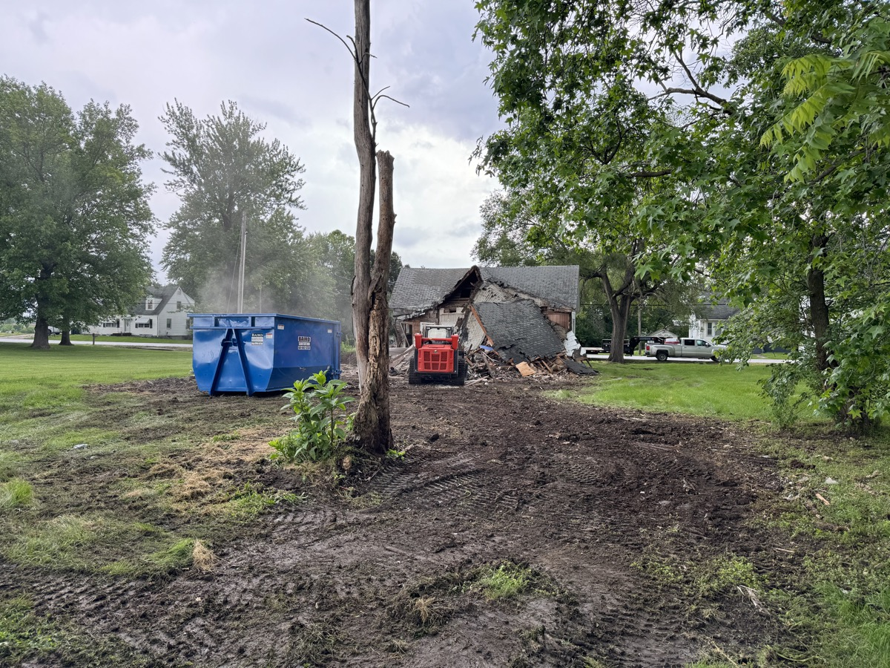

If you are trying to figure out demolition cost in Columbia, Missouri, here is the short version. A small shed runs about $2,500. A detached garage runs $4,500 to $8,500. A mobile home is $4,000 to $9,000. A residential house is $12,000 to $25,000. A light commercial building is $25,000 to $80,000. The rest of this guide is what changes those numbers up or down, what is actually included in a real quote, and how a flat-rate price beats a per-square-foot guess every time.
I'm Chris Kurtz, owner of Atlas Excavation & Demolition out of Columbia, MO. We run demolition jobs from Centralia down to Ashland and from Boonville east to Fulton every week. The cost ranges in this guide are not pulled off a national average page. They are the real flat-rate numbers we have quoted on real Boone, Howard, Callaway, and Cooper county jobs in the last twelve months. If a number looks low compared to a national calculator, that is because Mid-Missouri is not New York or Denver. If it looks high compared to a Craigslist quote, that is because we are licensed, insured, hauling to a permitted landfill, and pulling permits.
Quick Answer: Demolition cost in Columbia, Missouri runs from $2,500 for a small shed to $35,000 for a full house with a basement. Most Atlas jobs land between $4,000 and $18,000 all in. Per-square-foot, residential demolition averages $6 to $12 in Mid-Missouri. The price covers tear-down, hauling, permits inside city limits, and a rough graded pad. Call Atlas at (573) 234-6641 for a free on-site walkthrough and a flat written number.
In This Guide:
Demolition Cost in Columbia, Missouri by Project Type
This is the table I wish existed when I started taking demolition calls in Mid-Missouri. Real flat-rate ranges, organized by what most property owners actually call about.
| Project Type | Typical Atlas Range | Per Sq Ft Equivalent |
|---|---|---|
| Small shed (under 200 sq ft) | $2,500 - $4,000 | Not applicable |
| Detached garage (1-car) | $4,500 - $6,500 | $15 - $22 |
| Detached garage (2-car) | $6,000 - $8,500 | $12 - $18 |
| Mobile home, single-wide | $4,000 - $7,000 | $5 - $8 |
| Mobile home, double-wide | $6,000 - $9,500 | $5 - $8 |
| Pole barn, dirt floor | $3,500 - $6,000 | $5 - $8 |
| Standard barn (30 x 40) | $5,000 - $8,500 | $6 - $10 |
| Residential house, slab | $10,000 - $18,000 | $6 - $12 |
| Residential house, basement | $15,000 - $35,000 | $10 - $18 |
| Interior demolition (gut) | $2,500 - $9,000 | $3 - $7 |
| Concrete driveway removal | $1,500 - $4,500 | $3 - $7 |
| Light commercial building | $25,000 - $80,000 | $8 - $15 |
| Pool demolition, in-ground | $6,500 - $14,000 | Quoted per site |
If your project does not match a row in that table, it is probably a combination of two (a house plus a detached garage and a slab, for example) and we add them up after the walkthrough.
What Drives Demolition Cost in Mid-Missouri
Five things move the price more than anything else. National guides mention all of them. Here is what each one actually looks like on a Boone County job.
1. Foundation Type
Slab on grade is the cheapest. Crawlspace adds a day. A full basement adds two to three days because we have to break out the walls and floor, haul the concrete, and bring in fill to bring the pad back up to grade. A basement on a house can swing the total cost by $5,000 to $15,000 on its own.
2. Construction Material
Wood frame comes apart fast. Brick veneer over wood is about the same as wood. Solid brick, block, or poured concrete walls need a hydraulic hammer attachment and run 30 to 50 percent more. Most 1950s and 1960s ranch houses in Columbia are wood frame with a brick or stone veneer, which is the easiest residential demo there is.
3. Hazardous Materials
Anything built before 1985 needs an asbestos inspection before we can run a machine through it. The inspection itself is $400 to $800. If the lab finds friable asbestos in floor tile, popcorn ceiling, pipe wrap, or siding, abatement runs $2,000 to $10,000 depending on volume. Lead paint usually does not affect demolition cost directly, but it does change debris disposal routing. Atlas handles the inspection scheduling on every pre-1985 structure as part of the quote.
4. Access
Equipment has to get in and out. A house on a wide rural lot in Hallsville is easy. A house tight against the neighbor in an older Columbia neighborhood where the alley is gravel and the back yard is fenced is not. Hand demolition of a back wall to make room for the machine can add a day. Tight urban access can push a job 10 to 25 percent higher than the same structure on open land.
5. Distance to Disposal
Hauling is a real cost. Most of our debris goes to permitted Missouri C&D landfills in or near Columbia. If a job is out near Rocheport or Fulton, the trucks make longer round trips and the haul cost goes up. We bake this into the flat rate, but it is why a 30 x 40 garage in Columbia and the same garage 30 minutes out might quote $1,500 apart.
House Demolition Cost in Columbia, MO
House demolition is the biggest single category we run. A typical 1,500 to 1,800 square foot ranch on a slab in Columbia runs $12,000 to $18,000, all in. Add a full basement and the same house jumps to $18,000 to $28,000. A two-story house with a basement on a tight lot can push past $30,000. We have done houses in Ashland and Centralia at the lower end of those ranges because access is wide open and the disposal run is shorter.
For a deeper breakdown by house size, basement type, and age, see our full house demolition cost guide for Columbia, MO. If you are deciding between a tear-down and a remodel, we walk through that decision in demolish or renovate.
Mobile Home Removal Cost in Mid-Missouri
Mobile homes are the cheapest residential structure to remove because the home itself is built to come apart. A single-wide runs $4,000 to $7,000. A double-wide is $6,000 to $9,500. If the trailer is on a poured concrete pad or skirting with footings, add $1,000 to $2,500 for pad removal. If there is a connected porch, deck, or addition, we quote those as separate line items.
Full cost details, plus the rules around utility disconnects and title surrender, are in our mobile home removal cost guide and our Boone County before and after walkthrough.
Garage, Shed, and Outbuilding Cost
A standard one-car detached garage in Columbia runs $4,500 to $6,500. Two-car is $6,000 to $8,500. Sheds under 200 square feet usually come down for $2,500 to $4,000. Pole barns and outbuildings on dirt floors are cheaper than slab-built garages because there is no concrete to break out. For the detailed cost factors and a city-by-city breakdown, see our garage demolition cost guide for Columbia, MO. For barn-specific pricing, our barn demolition guide for Mid-Missouri walks through pole, stick-built, and dairy barn ranges.
Concrete Removal Cost
Concrete removal is often a standalone job. Driveway removal runs $1,500 to $4,500 depending on thickness and reinforcement. Patios are $1,200 to $3,000. Foundation slabs are $2,000 to $7,500. Anything with rebar or wire mesh runs higher because the saw and breaker passes take longer. Our concrete removal cost guide has the full per-square-foot math, and our concrete removal services overview covers driveways, slabs, and foundations.
Interior Demolition Cost
Interior demolition (selective tear-out for a renovation) runs $2,500 to $9,000 for most residential gut jobs in Columbia. Commercial interior tear-outs for general contractors are quoted by the square foot, usually $3 to $7 depending on what is coming out. For details on what we include for renovators and general contractors, see interior demolition for contractors in Mid-Missouri.
Commercial Demolition Cost
Light commercial demolition (small office, retail shell, restaurant teardown) runs $25,000 to $80,000 depending on square footage, foundation type, and any mezzanine or second-floor structure. We do not handle multi-story industrial or heavy steel teardowns. For the full scope and contractor process, see our commercial demolition contractor guide for Columbia, MO.
Permit and Disposal Costs in Columbia, MO
Inside Columbia city limits, any structure over 200 square feet needs a demolition permit. City permit fees are $50 to about $300 depending on the structure. You also need utility disconnect letters from the gas, water, electric, and sewer providers, and a Missouri One Call locate before any machine touches the ground. The City of Columbia Building & Site Development office is the contact (como.gov). Atlas pulls permits as part of every Columbia city job.
In unincorporated Boone County, most agricultural and accessory buildings on A-1 or A-2 zoned land do not need a county demolition permit, but you still need utility disconnects and the One Call locate. Disposal costs are the bigger piece. Missouri C&D landfills charge $40 to $90 per ton. A single residential house produces 50 to 150 tons of debris. Atlas hauls everything to a permitted facility (Missouri DNR permitted), and the disposal is built into the flat rate.
For a permit-by-permit walkthrough, see our demolition permit guide for Columbia, Missouri. For what actually happens to the wood, metal, concrete, and trash after a job, our debris disposal guide has the full chain of custody.
What's Included in an Atlas Demolition Quote
Every Atlas demolition quote is a flat written number that covers:
- The full tear-down of the structure
- Foundation and slab removal where called for in the scope
- All hauling and disposal at a permitted Missouri C&D landfill
- Demolition permit (inside Columbia city limits)
- Utility disconnect coordination with the gas, water, electric, and sewer providers
- Missouri One Call locate
- Asbestos inspection on pre-1985 structures
- Rough grade of the pad, ready for the next use
What is not included, but lined up by us for you, is asbestos abatement if the lab finds friable material. That is licensed remediation work that has to be bid separately. We coordinate the scheduling so you are not chasing two contractors. Fuel surcharges, hidden dump fees, and mid-job change orders are not part of how Atlas writes a quote.
For a side-by-side on how to compare quotes from different contractors and what red flags to watch for, see our guide to hiring a demolition contractor in Mid-Missouri.
How to Lower Demolition Cost (Without Cutting Corners)
A few honest ways to bring the number down on a real Mid-Missouri job:
- Combine jobs. If you have a house, a garage, and a slab to remove, bidding them together always beats three separate visits. The mobilization is the expensive part. We can usually save $1,500 to $4,000 on a combined scope.
- Schedule in the off-season. Late fall and winter (mid-November to mid-February) are slower for residential demolition in Columbia. Pricing flexibility opens up. Frozen ground is not a problem for tear-down. Mud is.
- Salvage selectively. If your structure has real reclaim value (timber-frame barn, original hardwood, fixtures), pulling those items before we arrive lowers the dump weight. We do not credit salvage in the quote, but we can leave material accessible for you or a salvager.
- Tie in land clearing. If the demolition is part of clearing a lot for a new build or putting the property up for sale, rolling our land clearing service into the same visit saves a return trip and gets the whole site usable.
What does not lower the cost in a real way is doing your own utility disconnects (the coordination is harder than the demo), trying to dispose of debris yourself (a single house produces more weight than a residential dumpster can legally hold), or hiring an unlicensed Craigslist crew (the dump receipts are not in your name, the liability is yours, and the job tends to leave debris on site).
How Long Demolition Takes (and What It Costs in Time)
Most demolitions are 1 to 3 days of actual machine work. The calendar time from your first call to a flat pad is usually 2 to 4 weeks, mostly waiting on utility disconnects and (for older structures) asbestos lab results. Our demolition timeline guide for Columbia, MO has the full week-by-week breakdown. The time itself is rarely a cost driver. The waiting is.
Get a Real Number for Your Demolition Project
Atlas writes a flat number after a free on-site walkthrough. No pressure, no fuel surcharges, no change orders mid-job. We answer the phone, show up when we say, and leave the site clean.
Get Your Instant Estimate Call (573) 234-6641Frequently Asked Questions
How much does demolition cost in Columbia, Missouri?
Demolition cost in Columbia, Missouri runs from about $2,500 for a small shed up to $35,000 for a full house on a basement foundation. Most jobs Atlas runs sit between $4,000 and $18,000. A detached garage is usually $4,500 to $8,500. A single-wide mobile home is $4,000 to $7,000. A standard residential house is $12,000 to $25,000. The price covers tear-down, hauling, and a rough graded pad. Atlas writes a flat number after a free on-site walkthrough, so the quote you get is the price you pay.
What is the average cost per square foot for demolition in Mid-Missouri?
Most residential demolition in Mid-Missouri pencils out to $6 to $12 per square foot, all in. Wood-framed houses sit at the low end. Brick or block houses, or houses with a full basement, push toward $14 to $18 per square foot because of the foundation work. Mobile homes and pole structures run lower because the structure comes apart faster. Per-square-foot is a useful rough check, but Atlas quotes a flat dollar number after walking the property because access, distance to the road, utility disconnects, and hazardous materials change the math more than square footage does.
Do I need a permit for demolition in Columbia, MO?
Inside Columbia city limits, yes. Any structure over 200 square feet needs a demolition permit from City of Columbia Building & Site Development. Permit fees run from $50 to about $300 depending on structure size. You also need utility disconnect letters from the gas, water, electric, and sewer providers before the city will sign off. In unincorporated Boone County, agricultural buildings on A-1 or A-2 zoned land usually do not need a county permit, but you still need utility disconnects and a Missouri One Call locate. Atlas pulls permits as part of every job in the city, and we handle the disconnect coordination either way.
What is included in an Atlas demolition quote?
An Atlas demolition quote is flat-rate and includes the full tear-down, all hauling and disposal at a permitted C&D landfill, foundation removal where called for, and a rough graded pad ready for the next use. We also handle the demolition permit inside Columbia city limits, the utility disconnect coordination, and the Missouri One Call locate. Asbestos inspection on pre-1985 structures is included on the front end. If the inspection finds friable asbestos, the abatement is a separate line item because it is licensed work, but we line it up for you so you are not chasing contractors. No hidden dump fees, no fuel surcharges, no change orders mid-job unless the scope itself changes.
Why is demolition so expensive?
Most of the cost is not the actual tear-down. It is the disposal. Hauling and dumping construction debris at a permitted Missouri C&D landfill costs $40 to $90 per ton, and a single residential house can produce 50 to 150 tons of debris. Add the equipment day rates, fuel, operator labor, and the permitting and disconnect coordination, and the tear-down itself is maybe a third of the total bill. Older structures cost more because of asbestos testing and abatement requirements. The honest answer is that demolition is the part of a project where it is hardest to cut corners without leaving the property worse off later, so a flat-rate quote from a licensed contractor is usually the best deal even when it feels steep up front.
Ready for a Flat Written Quote?
If you have a structure in Columbia, Ashland, Boonville, Fulton, Centralia, Harrisburg, Hallsville, Rocheport, or anywhere in the rural parts of Boone, Howard, Callaway, Cooper, Audrain, Cole, or Moniteau counties that needs to come down, I am glad to walk it and write a real number.
- Phone: (573) 234-6641
- Email: hello@deployatlas.com
- Online: Instant estimate form
For project-specific cost details, our full Atlas demolition library covers house demolition cost, mobile home removal cost, garage demolition cost, concrete removal cost, barn demolition, interior demolition, and commercial demolition. Process and permit details are in demolition permits, debris disposal, project timelines, and hiring a demolition contractor.